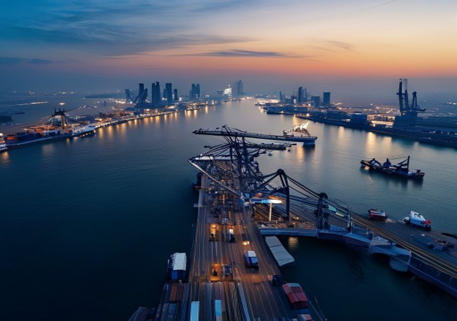
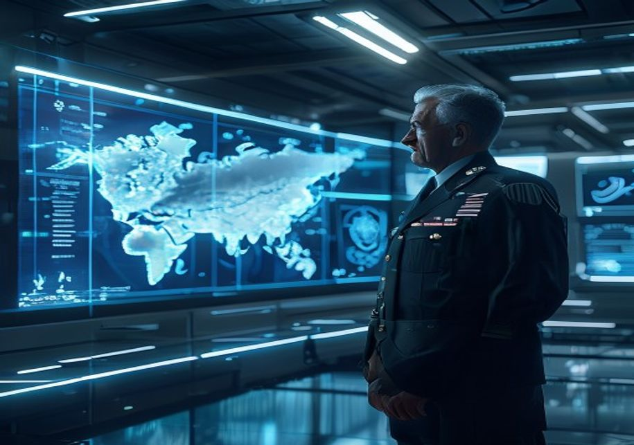
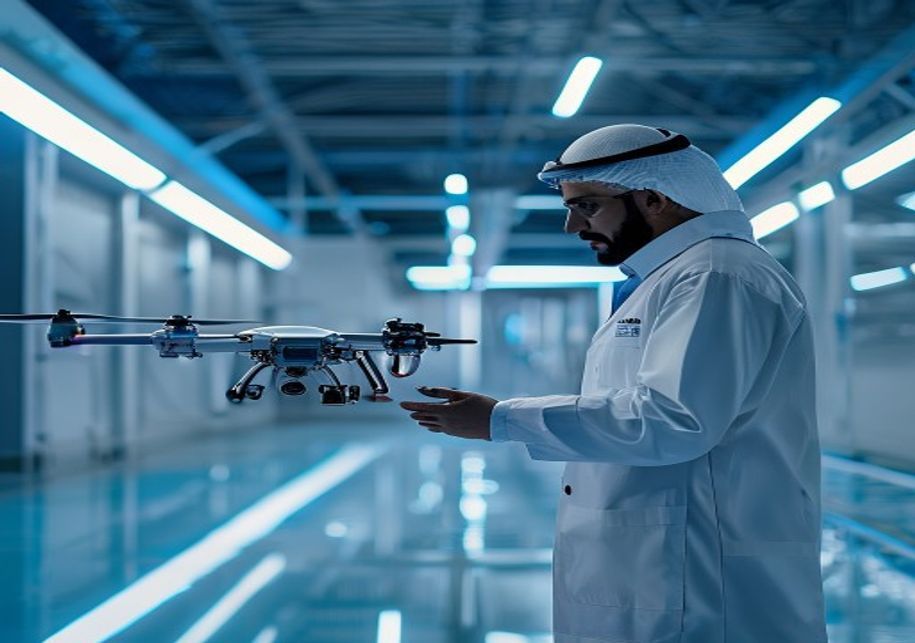
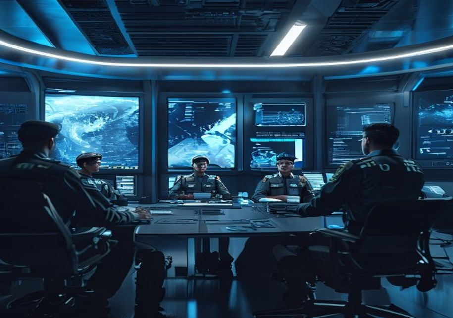

This document is a management consulting and research analysis deliverable for strategy discussion only. It is not professional advisory guidance.
This report was informed by public research and data from: Sipri, Defensenews, Iiss, Edgegroup, State, Cybercouncil, Gov, Thenationalnews.
The full source backup is archived in the backup folder.
The UAE's strategic location in the Persian Gulf places it at the center of multiple regional conflicts. The primary state-level threat remains Iran, whose ballistic missile program, naval capabilities in the Strait of Hormuz, and support for proxy forces directly challenge UAE security. Iran's nuclear ambitions, even if diplomatically constrained, add a layer of existential risk. Additionally, the Houthi movement in Yemen, backed by Iran, has demonstrated the ability to launch drone and missile attacks deep into UAE territory, as seen in 2022 strikes on Abu Dhabi. These attacks underscore the vulnerability of critical infrastructure and pop.
Non-state actors, including terrorist groups like ISIS and Al-Qaeda, continue to pose threats, though their operational capacity in the UAE is limited by robust internal security. More pressing are non-traditional threats: cyber attacks targeting government networks, financial systems, and critical infrastructure have increased in frequency and sophistication. The UAE's status as a global hub for trade and finance makes it a prime target for state-sponsored and criminal cyber actors. Maritime security is another concern, given the UAE's dependence on sea lanes for oil exports and trade, with piracy and naval mines posing risks in the Gulf an.

The UAE has responded by investing in layered defense systems, including advanced missile defense (e.g., THAAD and Patriot batteries), a modernized air force, and a growing naval fleet. However, the sheer diversity of threats—from ballistic missiles to cyber intrusions—requires continuous adaptation and resource allocation. The threat environment is further complicated by regional power competition, including tensions between Saudi Arabia and Iran, and the ongoing war in Yemen, which directly involve UAE forces or.
The UAE Armed Forces have undergone a significant transformation over the past decade, shifting from a primarily land-based force to a more balanced, technology-enabled military. The air force is the centerpiece of modernization, with the acquisition of 80 F-16E/F Desert Falcons and 30 Mirage 2000-9 fighters, supplemented by orders for the latest Rafale and F-35 aircraft (though the F-35 deal is currently on hold due to US policy concerns). These platforms are integrated with advanced munitions and electronic warfare systems, giving the UAE a qualitative edge in air combat. The air force also operates a fleet of transport and tanker aircraft.
Missile defense is a critical priority, driven by the threat from Iranian and Houthi ballistic missiles. The UAE operates Terminal High Altitude Area Defense (THAAD) batteries, Patriot PAC-3 systems, and has invested in the Sky Hunter and other indigenous systems. These are networked with early warning radars and command-and-control centers to provide multi-layered protection. The UAE is also exploring directed-energy weapons and advanced interceptors to counter drone swarms, which have proven effective in recent conflicts. Naval modernization includes the acquisition of Baynunah-class corvettes, Ganthoot-class patrol boats, and the planned.

Ground forces have been reorganized into lighter, more mobile units, with an emphasis on special operations and rapid deployment. The UAE has also invested in unmanned systems, including the Wing Loong and Predator drones, which have been used extensively in Yemen and Libya for reconnaissance and strike missions. This focus on air power, missile defense, and naval capabilities reflects a strategic shift toward deterrence and power projection, rather than static territorial defense. However, the modernization progr.
The UAE has made substantial progress in building a domestic defense industry, driven by the goal of economic diversification and strategic autonomy. The flagship entity, EDGE Group, was established in 2019 to consolidate over 25 defense companies and accelerate indigenous development. EDGE focuses on advanced technologies such as unmanned systems, cyber defense, electronic warfare, and smart weapons. Notable products include the Nimr armored vehicle, the Sky Knight drone, and the Al Tariq precision-guided munitions. The UAE also produces small arms, ammunition, and naval vessels through companies like Caracal and Abu Dhabi Ship Building.
Despite these achievements, the UAE remains heavily reliant on foreign technology for core capabilities. Major platforms such as fighter aircraft, missile defense systems, and advanced radars are imported from the United States, France, and other allies. Technology transfer restrictions, particularly from the US, limit the UAE's ability to modify or produce these systems locally. The UAE has sought to mitigate this by pursuing offset programs, which require foreign suppliers to invest in local industries or transfer technology. For example, the Rafale deal with France includes provisions for joint development and local maintenance. However,.
The defense industry is a key pillar of the UAE's Vision 2021 and subsequent economic plans, contributing to job creation and non-oil GDP. Exports of defense equipment have grown, with the UAE becoming a net exporter of certain systems like drones and armored vehicles. However, the domestic market is small, and export success depends on maintaining quality and competitive pricing. The UAE is also investing in research and development, partnering with universities and international firms to foster innovation. While.
The United States has been the UAE's primary security partner for decades, providing advanced weaponry, training, and intelligence sharing. The bilateral defense relationship is anchored by a 1994 Defense Cooperation Agreement, which grants US forces access to UAE bases, including Al Dhafra Air Base and Al Minhad Air Base. These facilities are critical for US operations in the Middle East, including airstrikes against ISIS and support for the war in Afghanistan. The UAE has also participated in US-led coalitions in Iraq, Syria, and Yemen, demonstrating its commitment to shared security objectives. However, the relationship has faced strains,.
In response to these tensions, the UAE has actively diversified its defense partnerships. France is a key European ally, with a permanent naval base in Abu Dhabi (Naval Base Zayed) and a history of arms sales, including the recent Rafale fighter deal. The UAE also has defense cooperation agreements with the United Kingdom, Italy, and Germany, focusing on training, cyber security, and joint exercises. In Asia, the UAE has strengthened ties with China, South Korea, and India. China has become a major supplier of drones and small arms, while South Korea has provided the K239 Chunmoo multiple rocket launcher system and is a partner in the UAE's.
Multilateral engagements through the Gulf Cooperation Council (GCC) and the Arab League provide additional frameworks for collective security, though these have been limited by internal divisions. The UAE also participates in the Islamic Military Alliance and contributes to UN peacekeeping missions. This diversification strategy enhances the UAE's strategic flexibility, reducing overreliance on any single partner. However, it also creates challenges in managing competing interests and ensuring interoperability amo.
The UAE consistently allocates a significant portion of its GDP to defense, with spending estimated at around 5-6% of GDP in recent years, one of the highest ratios globally. In absolute terms, the defense budget has grown from approximately $20 billion in 2015 to over $25 billion in 2025, driven by modernization programs and regional threats. This spending is financed by the UAE's substantial oil revenues, but the government has made progress in diversifying the economy, reducing the share of oil in GDP to below 30%. Non-oil sectors such as tourism, finance, and logistics now contribute the majority of government revenue, providing a more s.
The defense budget is allocated across personnel costs, operations and maintenance, and procurement. A significant portion goes to capital acquisitions, including fighter aircraft, missile defense systems, and naval vessels. The UAE also invests in research and development through its defense industry, though this remains a smaller share. The sustainability of defense spending is supported by the UAE's sovereign wealth funds, which total over $1 trillion, providing a buffer against oil price volatility. However, a prolonged period of low oil prices could pressure the budget, as seen during the 2014-2016 downturn when defense spending was tem.
Offset programs are a key feature of UAE defense procurement, requiring foreign suppliers to reinvest a portion of the contract value into the local economy. These offsets have stimulated growth in sectors such as aerospace, electronics, and services, contributing to economic diversification. For example, the F-16 offset program led to the establishment of maintenance and repair facilities, while the Rafale deal includes investments in a local engine maintenance center. While offsets have had mixed success, they r.
The UAE is positioning itself as a leader in emerging defense technologies, particularly in artificial intelligence (AI), unmanned systems, and space. The government has established a Ministry of Artificial Intelligence and launched the UAE Strategy for Artificial Intelligence 2031, which includes defense applications such as autonomous drones, cyber defense, and intelligence analysis. The UAE has already deployed AI-enabled systems for border surveillance and threat detection, and is investing in AI research through partnerships with universities and tech companies. In the drone domain, the UAE is a pioneer, having used armed drones extensi.
Space defense is another priority, with the UAE having launched its own satellites for communications and Earth observation, including the KhalifaSat and the Hope Mars probe. The UAE Space Agency is developing a space-based surveillance system to monitor missile launches and provide early warning. The country also plans to establish a space command within the military to coordinate space-related activities. These investments in space and AI are part of a broader strategy to achieve greater strategic autonomy, reducing dependence on foreign intelligence and surveillance capabilities. However, the UAE still relies on allies for critical space-.

The pursuit of strategic autonomy is a defining theme of the UAE's future defense posture. While the UAE values its alliances, it seeks to build the capacity to act independently when necessary. This includes developing indigenous production of key weapons systems, investing in cyber and electronic warfare capabilities, and fostering a culture of innovation within the military. The UAE is also expanding its defense diplomacy, engaging with a wider range of partners to access diverse technologies and expertise. How.
The UAE Armed Forces face significant personnel challenges, including a small national population (approximately 1 million Emiratis) that limits the pool of available recruits. To address this, the UAE relies heavily on expatriate personnel, particularly in technical and support roles, and has implemented mandatory military service for Emirati men (since 2014) and voluntary service for women. However, retention of skilled personnel, especially in specialized fields such as cyber operations, drone piloting, and engineering, remains a challenge. The private sector often offers more attractive salaries and career opportunities, leading to a bra.
Training and education are priorities for the UAE, with investments in military academies, simulation centers, and international training programs. The UAE partners with US, French, and British forces for joint exercises and exchange programs, which enhance interoperability and expose Emirati personnel to advanced tactics. The UAE also operates its own advanced training facilities, such as the Al Ain Air Base training center and the Naval Training Center in Abu Dhabi. However, the quality of training can vary, and there is a need for continuous updating to keep pace with technological advancements. The UAE is exploring the use of virtual rea.

The reliance on expatriate personnel creates vulnerabilities, as these individuals may not have the same long-term commitment to the UAE's defense. The government has implemented policies to encourage naturalization and integration, but cultural and legal barriers remain. To address personnel shortages, the UAE is investing in automation and unmanned systems, which reduce the need for human operators. For example, the use of drones for surveillance and strike missions allows the UAE to project power with fewer per.
Cyber threats have emerged as a top concern for the UAE, given its status as a digital hub and the increasing sophistication of state-sponsored attacks. The UAE has established the UAE Cyber Security Council and the National Electronic Security Authority (NESA) to coordinate defense against cyber threats. The country has also invested in cyber defense capabilities, including intrusion detection systems, security operations centers, and cyber incident response teams. The UAE participates in international cyber exercises and has signed agreements with allies such as the US and UK to share threat intelligence. However, the cyber threat landscap.
Maritime security is another critical domain, given the UAE's extensive coastline and dependence on sea lanes for trade and energy exports. The UAE Navy has been modernized with new corvettes, patrol boats, and support vessels, and is developing capabilities for mine countermeasures and anti-submarine warfare. The UAE also operates a network of naval bases, including the main base in Abu Dhabi and forward operating bases in Fujairah and the Persian Gulf islands. The UAE is a key partner in international maritime security initiatives, such as the Combined Maritime Forces (CMF) based in Bahrain, which conducts counter-piracy and counter-terror.
The UAE is investing in integrated maritime domain awareness systems, combining radar, satellite, and sensor data to monitor shipping traffic and detect threats. This includes the use of unmanned surface vessels and aerial drones for surveillance. The UAE is also exploring the use of artificial intelligence to analyze maritime data and predict potential incidents. However, the maritime environment is vast and challenging, and the UAE must continue to invest in assets and partnerships to maintain security. The grow.
The UAE's defense posture is evolving toward greater strategic autonomy, which has implications for allied nations, particularly the United States. While the UAE remains a committed partner, it is increasingly willing to pursue independent policies and diversify its partnerships. Allied nations should recognize this shift and adjust their engagement strategies accordingly. For the US, this means moving beyond a transactional arms sales approach to a more comprehensive partnership that includes technology transfer, joint development, and deeper intelligence sharing. The US should also engage the UAE on areas of mutual interest, such as cyber.
European and Asian allies have an opportunity to deepen their defense ties with the UAE by offering flexible partnership models that respect the UAE's desire for autonomy. This includes co-development programs, joint exercises, and educational exchanges. France has already set a precedent with the Rafale deal, which includes significant technology transfer and local investment. Other nations, such as South Korea and India, are also expanding their defense cooperation with the UAE. Allied nations should also engage the UAE in multilateral forums, such as the GCC and the Arab League, to promote collective security and address regional challeng.
The UAE's pursuit of strategic autonomy does not mean it is turning away from its allies. Rather, it seeks a more balanced and diversified partnership portfolio that enhances its security and economic resilience. Allied nations should view this as an opportunity to build a more mature and sustainable relationship, based on mutual respect and shared interests. They should also be prepared for the UAE to take independent positions on regional issues, such as the conflict in Yemen or relations with Iran. By adapting.